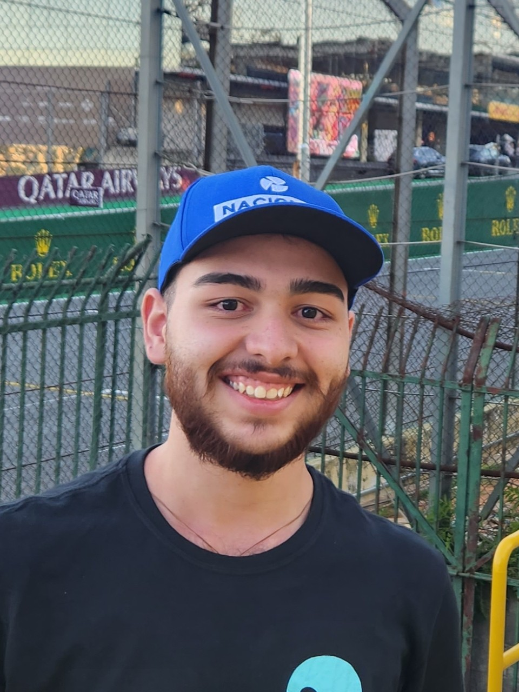

Bem-Vindo!
Sou Átila Carvalho Rocha
Desenvolvo dashboards e Servidores MCP
Quem sou eu?

Olá!
Sou Átila Carvalho Rocha, sou graduando em Ciência da Computação (5º semestre) na Universidade de Fortaleza (UNIFOR) e estou estagiando no Tribunal de Contas do Estado do Ceará (TCE-CE) com ênfase em Ciência de Dados.
Nesse estágio estou desenvolvendo diversas habilidades como a criação de dashboards e de Servidores MCP. O meu objetivo atualmente é desenvolver novas habilidades em relação à Ciência de dados e ampliar meu networking.
Os meus hobbies favoritos são videogames e automobilismo pois são paixões desde de minha infância.